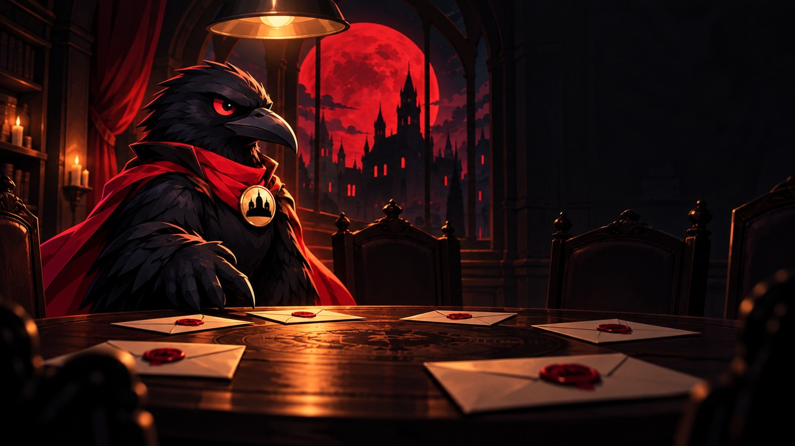

TezMafia — guruhingizni Qorashaharga aylantiradi. Bot — hakam: rollarni shaxsiy xabarda tarqatadi, tun va kunni boshqaradi, ovozlarni sanaydi. 5 kishidan boshlab. Botni guruhga qo‘shing va /mafia yozing.